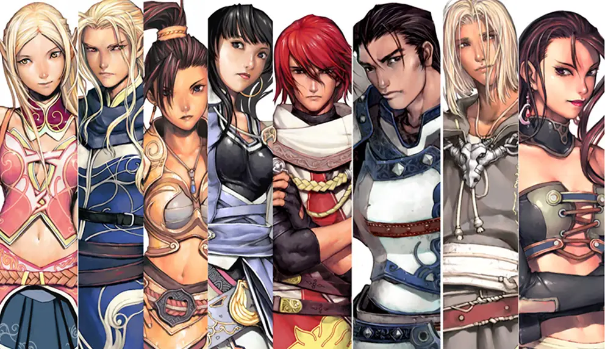

NCSOFT · 2026.02.11 정식 오픈 · PC 전용
리니지 클래식 원격 임대
| 플랫폼 | PC 전용 (모바일 앱 없음) |
|---|---|
| 정식 오픈 | 2026년 2월 11일 |
| 공식 자동사냥(ATS) | '오염된 축복의 땅' 한정 · 하루 기본 3시간 |
| 시간 충전 | '드워프의 톱니바퀴'(1시간) 아이템 |
리니지 클래식은 모바일 앱이 없는 PC 전용 게임입니다. 원격PC를 빌리면 외출 중에도 스마트폰·태블릿·노트북으로 접속해 내 캐릭터를 그대로 플레이할 수 있고, 집 PC를 24시간 켜 두지 않아도 됩니다.

리니지 클래식은 24시간 자동사냥이 안 돼요공식 자동사냥(ATS)은 '오염된 축복의 땅' 지역에서 하루 기본 3시간만 지원됩니다. 나머지는 수동 플레이 중심이라, 짧은 시간이라도 자주 접속할 수 있는 환경이 중요합니다. 외부 자동화·불법 프로그램 사용은 지원하지 않습니다.
리니지 클래식, 원격PC가 필요한 이유
- PC 전용 게임을 어디서나 — PC 앞을 떠나면 플레이가 끊기는 게임이지만, 원격PC는 휴대폰 원격 앱으로 바로 이어서 조작할 수 있습니다.
- SSD 필수 사양 충족 — 공식 사양에서 SSD 설치를 필수로 요구합니다. 나노원격임대 PC는 전 옵션 SSD 250GB입니다.
- 다계정 동시 실행 — 클라이언트마다 RAM을 사용하므로, 2계정 이상은 RAM 여유가 있는 옵션을 추천드립니다.
리니지 클래식 공식 PC 사양
| 항목 | 최소 | 권장 |
|---|---|---|
| CPU | Intel 4세대 / Ryzen 1000 시리즈 | Intel 11세대 / Ryzen 5000 시리즈 |
| RAM | 8GB | 16GB |
| GPU | GTX 1050 Ti / RX 580 이상 | GTX 1050 Ti / RX 580 이상 |
| 저장공간 | SSD 40GB 이상 (필수) | SSD 40GB 이상 (필수) |
| 운영체제 | Windows 10 64bit | Windows 10 64bit |
리니지 클래식 추천 임대 옵션
라이젠 5700G
8코어 16쓰레드 · RAM 32GB · 내장 Vega 8
BEST · 다중8코어 16쓰레드 · RAM 32GB · 내장 Vega 8
라이젠 2600
6코어 12쓰레드 · RAM 24GB · 외장 그래픽카드
단독 고사양6코어 12쓰레드 · RAM 24GB · 외장 그래픽카드
다계정은 8코어·RAM 32GB인 5700G, 1계정을 높은 그래픽으로 즐기려면 외장 그래픽 옵션 라이젠 2600을 추천합니다.
리니지 클래식 원격 임대 자주 묻는 질문
리니지 클래식을 원격PC에서 어떻게 플레이하나요?
원격PC에 접속한 뒤 엔씨소프트 공식 런처로 리니지 클래식 PC 클라이언트를 실행하시면 됩니다. 스마트폰에서도 원격 앱으로 화면을 보며 키보드·마우스 조작을 그대로 할 수 있습니다.
리니지 클래식도 24시간 자동사냥이 되나요?
아니요. 공식 자동사냥(ATS)은 '오염된 축복의 땅' 지역에서만, 하루 기본 3시간(아이템으로 시간 충전 가능)까지 지원됩니다. 원격PC는 언제든 바로 접속할 수 있는 환경을 제공하는 것입니다.
리니지 클래식 다계정은 몇 개까지 돌릴 수 있나요?
SSD와 RAM 영향이 큰 편입니다. 원하는 계정 수를 알려주시면 카카오톡으로 맞는 옵션을 안내드립니다.
집에 있는 PC로 하면 안 되나요?
가능하지만 PC를 계속 켜 두는 전기요금, 발열·소음, 외출 중 원격 설정 문제가 생깁니다. 원격PC는 전용 환경에서 상시 켜져 있어 필요할 때 바로 접속하실 수 있습니다.